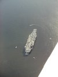

June
- 2nd
- 3rd
- 4th
- 5th
- 6th
- 7th
- 8th
- 9th
- 10th
- 11th
- 12th
- 13th
- 14th
- 15th
- 16th
- 17th
- 18th
- 19th
- 20th
- 21st
- 22nd
- 23rd
- 24th
- 25th
- 26th
- 27th
- 28th
- 29th
- 30th
July
- 1st
- 2nd
- 3rd
- 4th
- 5th
- 6th
- 7th
- 8th
- 9th
- 10th
- 11th
- 12th
- 13th
- 14th
- 15th
- 16th
- 17th
- 18th
- 19th
- 20th
- 21st
- 22nd
- 23rd
- 24th
- 25th
- 26th
- 27th
- 28th
- 29th
- 30th
- 31st
August
_in_Hobart.jpg){kind=link}

The weather had not improved. There was still strong wind from the northwest with moderate turbulence - the west coast was still not within reach. The forecast for the next couple of days was not too positive either. A high-pressure system was predicted to hit Tassie around Sunday, but that was a little too unsure and too long to wait.So we decided to head back home to Wynyard - beginning with a short detour down past Bruny Island. The weather looked fine up through the middle of Tassie, so that's were we went. At 8500 feet the air was nice and smooth. We were prepared to head east if it got to cloudy. But we were lucky and could fly in a corridor of no clouds with overcast to both sides of us (Paul said that Moses must have split the clouds for us). This corridor brought us right past Cradle Mountain, and against all odds and expectations we got a good view of the mountain and Dove Lake.
{kind=link}
{kind=link}
Back in Wynyard we made a couple of circles at 1500 feet around Chez and Paul's house. This confused another pilot in the MBZ area (radio frequency around the aerodrome) who demanded to know about our intentions - he was doing circuits with an instructor and probably enjoyed doing a bit of an unscheduled talk on the radio.
After another of Chez's fantastic dinners (yummy pizza), we sat up until 2 am with Paul in front of the fire place and discussed the gold price. We didn't agree if it was going to go up or down - time will show who was right ;-)